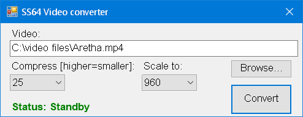

The PowerShell script below is a simple GUI front end for the FFmpeg video converter.
To use it save the script as a .ps1 file and call using PowerShell.exe, alternatively you can grab this zip file.
You will also need to place a copy of FFmpeg.exe in the same folder.
This demonstrates the use of System.Windows.Forms to build a graphical interface with drop down lists, command buttons etc:

# Requirements: Download FFmpeg.exe and place it in the same directory as the script.
# FFmpeg source: https://ffmpeg.zeranoe.com/builds/
# Requires PowerShell 3.0 or greater
#Requires -Version 3.0
# Last update: 2018-10-19, Simon Sheppard
# ss64.com/ps/syntax-video.html
# Licence:
# The GNU Lesser General Public License (LGPL) version 2.1 or later.
# However, FFmpeg incorporates several optional parts that are covered by
# the GNU General Public License (GPL) version 2 or later.
# If those parts get used then the GPL applies.
# FFMPeg source
$FFMPEG = $PSScriptRoot + "\ffmpeg.exe"
$Branding = "SS64 Video converter"
$AllowScaling = $true #change to $false to hide scaling options
$QualityOptions = 10,20,25,30,40 # 0..50
$ScaleOptions = 480,640,720,960,1280,1920
$font = "Arial,10"
Write-Host $Branding
[void][System.Reflection.Assembly]::LoadWithPartialName("System.Drawing")
$fontBold = [System.Drawing.Font]::new("Arial", 10, [System.Drawing.FontStyle]::Bold)
# Build main form
Add-Type -AssemblyName System.Windows.Forms
$GUIform = New-Object system.Windows.Forms.Form
[System.Windows.Forms.Application]::EnableVisualStyles()
$GUIform.Text = $Branding
$GUIform.FormBorderStyle = 'FixedSingle'
$GUIform.MaximizeBox = $false
$GUIform.MinimizeBox = $false
$GUIform.TopMost = $false
$GUIform.Width = 510
$GUIform.Height = 200
$btnConvert = New-Object system.windows.Forms.Button
$btnConvert.Text = "Convert"
$btnConvert.Width = 100
$btnConvert.Height = 50
$btnConvert.Add_Click({
if($txtVideo.Text -and $(Test-Path $txtVideo.Text)) {
$lblStatus.Text = "Status: Converting Video..."
$audioArgument = "-b:a 192k"
$videoArgument = $($txtVideo.Text)
$outFile = "`"" + $videoArgument.Substring(0, $txtVideo.Text.LastIndexOf('.')) + "_CONVERTED_" + $(get-date -f yyyy-MM-dd-mm-ss-ms) + ".mp4"+ "`""
$videoArgument = "`"" + $($txtVideo.Text) + "`""
$Argument = "-i $videoArgument -c:v libx264 -crf $($cmbQuality.Text) -preset faster -vf scale=$($cmbScale.Text):-2 -strict experimental $audioArgument $outFile"
Start-Process $FFMPEG -ArgumentList $Argument -Wait
[System.Windows.Forms.MessageBox]::Show("Video has been converted and saved as $outFile" , $Branding)
}
else {
[System.Windows.Forms.MessageBox]::Show("Video file not found." , $Branding)
write-host $txtVideo.Text
}
$lblStatus.Text = "Status: Standby"
})
$btnConvert.location = new-object system.drawing.point(375,100)
$btnConvert.Font = $font
$GUIform.controls.Add($btnConvert)
$txtVideo = New-Object system.windows.Forms.TextBox
$txtVideo.Width = 470 #227
$txtVideo.Height = 20
$txtVideo.location = new-object system.drawing.point(15,28)
$txtVideo.Font = $font
$GUIform.controls.Add($txtVideo)
$btnBrowse = New-Object system.windows.Forms.Button
$btnBrowse.Text = "Browse..."
$btnBrowse.Width = 100
$btnBrowse.Height = 30
$btnBrowse.Add_Click({
$OpenFileDialog = New-Object System.Windows.Forms.OpenFileDialog
$OpenFileDialog.initialDirectory = $initialDirectory
$OpenFileDialog.CheckFileExists = $true
$OpenFileDialog.ShowDialog() | Out-Null
$txtVideo.Text = $OpenFileDialog.FileName
})
$btnBrowse.location = new-object system.drawing.point(375,60)
$btnBrowse.Font = $font
$GUIform.controls.Add($btnBrowse)
$lblStatus = New-Object system.windows.Forms.Label
$lblStatus.Text = "Status: Standby"
$lblStatus.AutoSize = $true
$lblStatus.Width = 25
$lblStatus.Height = 10
$lblStatus.location = new-object system.drawing.point(15,128)
$lblStatus.Font = $fontBold
$lblStatus.ForeColor = 'Green'
$GUIform.controls.Add($lblStatus)
$cmbQuality = New-Object system.windows.Forms.ComboBox
$cmbQuality.Width = 90
$cmbQuality.Height = 20
$cmbQuality.FlatStyle = "Standard"
$cmbQuality.location = new-object system.drawing.point(15,84)
$cmbQuality.DropDownStyle = [System.Windows.Forms.ComboBoxStyle]::DropDownList;
Foreach($Quality in $QualityOptions) {
$cmbQuality.Items.Add($Quality) | out-null
}
$cmbQuality.Text = "25"
$cmbQuality.Font = $font
$GUIform.controls.Add($cmbQuality)
$lblQuality = New-Object system.windows.Forms.Label
$lblQuality.Text = "Compress [higher=smaller]:"
$lblQuality.AutoSize = $true
$lblQuality.Width = 25
$lblQuality.Height = 10
$lblQuality.location = new-object system.drawing.point(15,61)
$lblQuality.Font = $font
$GUIform.controls.Add($lblQuality)
$lblVideo = New-Object system.windows.Forms.Label
$lblVideo.Text = "Video:"
$lblVideo.AutoSize = $true
$lblVideo.Width = 25
$lblVideo.Height = 10
$lblVideo.location = new-object system.drawing.point(15,8)
$lblVideo.Font = $font
$GUIform.controls.Add($lblVideo)
$cmbScale = New-Object system.windows.Forms.ComboBox
$cmbScale.Width = 90
$cmbScale.Height = 20
$cmbScale.FlatStyle = "Standard"
$cmbScale.DropDownStyle = [System.Windows.Forms.ComboBoxStyle]::DropDownList;
$cmbScale.location = new-object system.drawing.point(230,84)
Foreach($Size in $ScaleOptions)
{
$cmbScale.Items.Add($Size) | out-null
}
$cmbScale.Text = "960"
$cmbScale.Font = $font
$cmbScale.visible = $AllowScaling
$GUIform.controls.Add($cmbScale)
$lblScale = New-Object system.windows.Forms.Label
$lblScale.Text = "Scale to:"
$lblScale.AutoSize = $true
$lblScale.Width = 25
$lblScale.Height = 10
$lblScale.location = new-object system.drawing.point(230,61)
$lblScale.Font = $font
$lblScale.visible = $AllowScaling
$GUIform.controls.Add($lblScale)
# Display completed form
[void]$GUIform.ShowDialog()
$GUIform.Dispose()
This can also be found on GitHub:
“They say you can rap about anything except for Jesus
That means guns, sex, lies, video tapes, But if I talk about God my record won't get played Huh?” ~ Kanye West
Related PowerShell Commands:
New-Object - Create a new .Net object
FFmpeg scaling - wiki examples
FFmpeg Encode Videos for YouTube - wiki examples
Using FFMPEG to squish lots of videos - Scott Hanselman